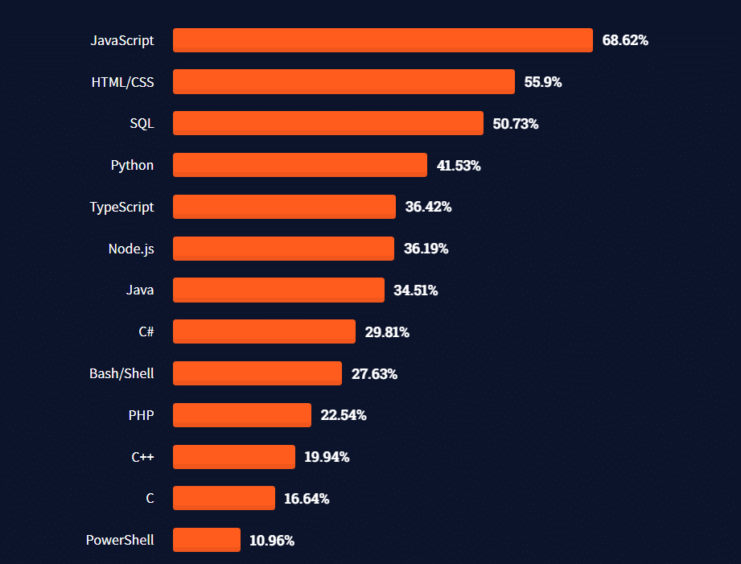

Demandas
Demandas
|  |
Lenguajes más utilizados dentro del Back-End son: Las habilidades y los lenguajes de programación que se indican a continuación son los más demandados por los desarrolladores de backend y te convertirán en un candidato competitivo. |
|
El desarrollo web es un campo de rápido crecimiento, en todas las especialidades de desarrollo web, se espera un crecimiento del 8% de los puestos de trabajo en la próxima década. Eso supone unos 13.400 puestos de trabajo al año, un crecimiento mucho más rápido que la media. Un experto en desarrollo backend se encarga de desarrollar el código de programación que se utilizará para el funcionamiento lógico de un sitio web.Cada trabajo de desarrollador backend requiere un conjunto de habilidades ligeramente diferente. Asimismo, debe estar familiarizado con sistemas de bases de datos como Oracle, SQL Server o MySQL, ya que una de las funciones principales del programador backend será asegurar la conexión de la página con los servidores web y las basesde datos. |
|